|
You are here : Control System Design - Index | Book Contents | Appendix C | Section C.7 C. Results From Analytic Function TheoryC.7 Integrals revisitedTheorem 1.7 (Cauchy Integral Theorem) If f(z) is analytic in some simply connected domain D, then 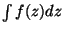 is independent of path in D and
where C is a simple closed path in D. Proof Follows from the Cauchy-Riemann conditions and Theorem C.2. We are also interested in the value of integrals in various limiting situations. The following examples cover relevant cases. We note that if LC is the length of a simple curve C, then
Example C.5 Assume C is a semi circle centered at the origin and with radius R. The path length is then 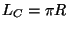. Hence
Example C.6 Consider the function 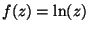 and an arc of a circle, C, described by 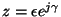 for 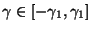. Then
This is proved as follows. On C we have that 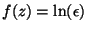. Then
We then use the fact that 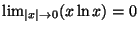. And the result follows. Example C.7 Consider the function
and a semi circle, C, defined by 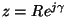 for 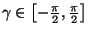. Then if C is followed clockwise
This is proved as follows. On C we have that , then
We also know that
Then
From where, evaluating for n = 1 and for n > 1, the result follows. Example C.8 Consider the function and a semi circle, C, defined by for . Then, for clockwise C,
This is proved as follows. On C we have that , then
We recall that, if 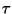 is a positive real number, and 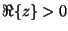, then
And, for very large R, we have that,
Thus, in the limit, this quantity goes to zero for all positive n. The result then follows. Example C.9 Consider the function
and a semi circle, C, defined by for . Then for clockwise C
This result is obtained on noting that
and on applying the result in example C.7. Example 1.10 Consider a function of the form
and C being an arc of circle 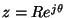 for 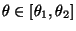. Thus 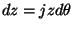 and
Thus as , we have that
Example 1.11 Consider now f(z) = zn. If the path C is a full circle, centered at the origin and radius R, then
We can now develop Cauchy's Integral Formula Say that f(z) can be expanded as
the, a-1 is called the residue of f(z) at z0. 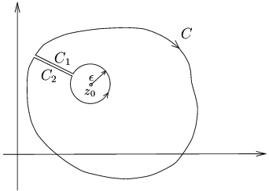 Consider the path shown in Figure C.3. Since f(z) is analytic in a region containing C, we have that the integral around the complete path shown in Figure C.3 is zero. The integral along C1 and C2 cancel. The anticlockwise circular integral around z0 can be computed following example C.11 to yield 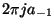. Hence the integral around the outer curve C is minus the integral around the circle of radius 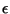. Thus
This leads to the following result: Theorem 1.8 (Cauchy's Integral formula) Let g(z) be analytic in a region. Let q be a point inside the region. Then 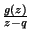 has residue g(q) at z = q and the integral around any closed contour C enclosing q in a clockwise direction is given by
We note that of g(z) at an interior point z = q of a region D, can be obtained by integrating on the boundary of D. Hence we can determine the value of an analytic function inside a region by its behaviour on the boundary. |